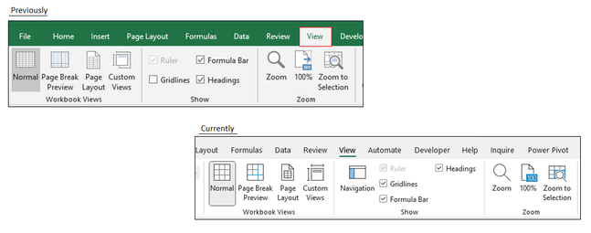
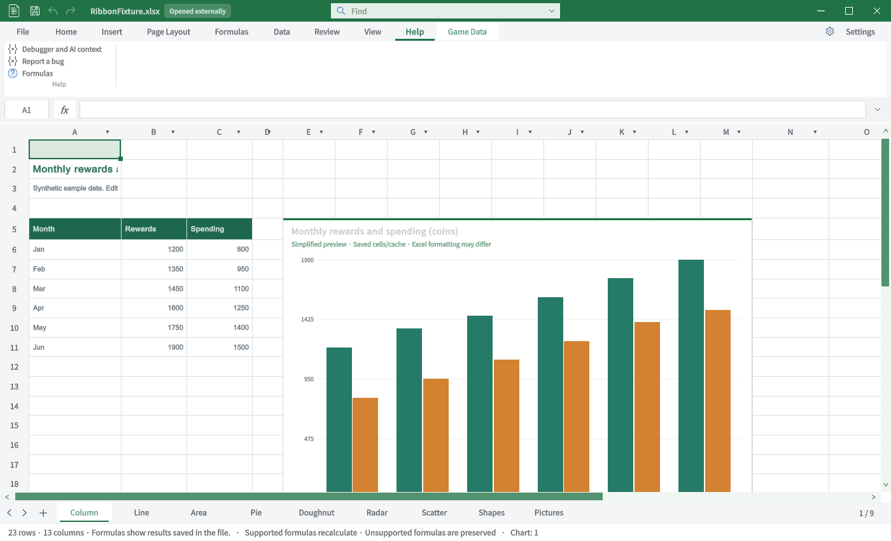
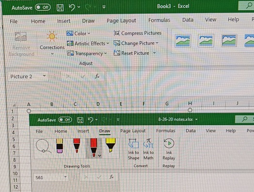
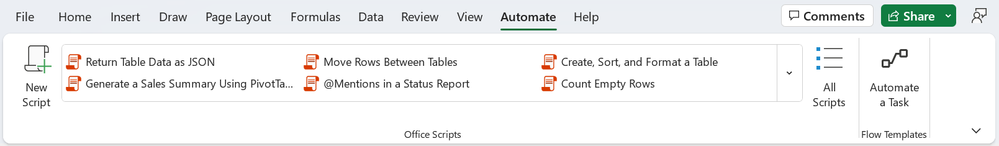
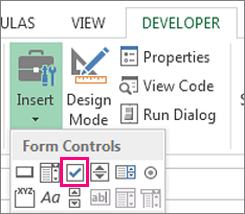

Tracefolio REPORTS & ISSUES
Tracefolio REPORTS & ISSUESExcel ↔ TurnRoom 탭별 TC · 일반 탭 2
부분 완료TC-RIB-08–TC-RIB-13: 원본과 실제 Unity 캡처, 절차·기대·실제·재QA를 구분합니다.
작업 결과
6개 탭의 비교 TC입니다. 전체 Excel 동등성 통과 보고가 아닙니다.
변경 내용
적용 내용
TC-RIB-08 · 보기 — 불일치
| 항목 | 내용 |
|---|---|
| 실행 절차 | 보기 탭을 선택합니다. |
| 기대 동작 | 통합 문서 보기·표시·확대/축소·창 그룹을 대조합니다. |
| 실제 결과 | 고정·해제·개체·시트·보기 메뉴는 보이지만 원본의 보기/확대 그룹 구성과 다릅니다. |
| 재QA·수정 필요 | 고정·해제·확대·창별 개별 실행 회귀. |
TC-RIB-09 · 도움말 — 비교자료 부족
| 항목 | 내용 |
|---|---|
| 실행 절차 | 도움말을 선택합니다. |
| 기대 동작 | 도움말 탭의 실제 명령을 대조합니다. |
| 실제 결과 | 현재 디버그·버그 보고·수식 버튼 표시. 원본에는 Help 탭 이름만 보여 명령 대조는 미실행입니다. |
| 재QA·수정 필요 | 원본 Help 선택 화면 확보 및 명령 실행. |
TC-RIB-10 · 그리기 — 기능 미구현
| 항목 | 내용 |
|---|---|
| 실행 절차 | 그리기 탭 진입점을 찾습니다. |
| 기대 동작 | 펜·잉크·다시 재생 등의 탭을 제공합니다. |
| 실제 결과 | 현재 탭 목록과 소스에 그리기 탭이 없습니다. 원본은 실제 Excel Draw 화면입니다. |
| 재QA·수정 필요 | 그리기 기능·탭 미구현. |
TC-RIB-11 · 자동화 — 기능 미구현
| 항목 | 내용 |
|---|---|
| 실행 절차 | 자동화 탭 진입점을 찾습니다. |
| 기대 동작 | Office Scripts 목록과 스크립트 진입점을 대조합니다. |
| 실제 결과 | 현재 Automate 탭은 없습니다. 제품의 MCP·CLI를 Office Scripts와 동일한 기능으로 계산하지 않습니다. |
| 재QA·수정 필요 | Office Scripts 호환 기능 미구현. |
TC-RIB-12 · 개발 도구 — 기능 미구현
| 항목 | 내용 |
|---|---|
| 실행 절차 | 개발 도구 탭 진입점을 찾습니다. |
| 기대 동작 | 컨트롤·코드·디자인 모드 그룹을 대조합니다. |
| 실제 결과 | Developer 탭과 VBA/폼 컨트롤 진입점이 없습니다. |
| 재QA·수정 필요 | 개발 도구 미구현. |
TC-RIB-13 · 추가 기능 — 기능 미구현
| 항목 | 내용 |
|---|---|
| 실행 절차 | 삽입의 추가 기능 그룹을 확인합니다. |
| 기대 동작 | 추가 기능 진입점을 대조합니다. |
| 실제 결과 | 현재 Get/My Add-ins 진입점이 없습니다. 원본은 삽입 탭의 추가 기능 그룹이며 별도 Add-ins 탭 전체는 아닙니다. |
| 재QA·수정 필요 | 별도 Add-ins 원본 확보·추가 기능 연동. |
검증
Unity6000.0.83f1 / Windows / 영어 / 실제 Editor GUIView Direct3D11 캡처입니다. 별도 QA 프로젝트에서 실행했으며 모형·AI 이미지는 사용하지 않았습니다. Excel은 출처의 게시 원본이며 이 PC에서 직접 촬영한 화면이 아닙니다.
TC-RIB-08 · 사진 대조
| Excel 원본 | TurnRoom 현재 |
|---|---|
 |
원본 범위: 부분 원본·정확한 빌드 미확인. 원본 출처
TC-RIB-09 · 사진 대조
| Excel 원본 | TurnRoom 현재 |
|---|---|
 |
 |
원본 범위: 전체 Help 리본 아님. 원본 출처
TC-RIB-10 · 사진 대조
| Excel 원본 | TurnRoom 현재 |
|---|---|
 |
 |
원본 범위: Excel Draw 화면·사진 촬영 자료. 원본 출처
TC-RIB-11 · 사진 대조
| Excel 원본 | TurnRoom 현재 |
|---|---|
 |
|
원본 범위: Excel Automate 원본. 원본 출처
TC-RIB-12 · 사진 대조
| Excel 원본 | TurnRoom 현재 |
|---|---|
 |
|
원본 범위: Developer 컨트롤 부분 원본. 원본 출처
TC-RIB-13 · 사진 대조
| Excel 원본 | TurnRoom 현재 |
|---|---|
 |
 |
원본 범위: 삽입 Add-ins 그룹 부분 원본. 원본 출처
남은 사항
명령 전체를 클릭·저장·재열기한 전수 동작 QA는 아닙니다. 화면 표시와 기능 실행 판정을 분리했습니다. 없는 기능은 미구현으로 기록했고 차단으로 바꾸지 않았습니다.
로컬 Excel 실행경로를 확보하지 못해 동일 빌드의 원본 직접 촬영은 미실행입니다. 일부 참조는 구형 Windows 또는 Excel 웹의 부분 화면입니다. 제품 저장소 커밋·푸시는 미실행입니다.
교훈: 원본의 실제 제품·탭을 확인하고 부분 자료를 전체 대조로 계산하지 않습니다. 기존 전역 지침 범위이므로 전역 변경 없음.
작업 시간
- 제안 시간: 최초15–25분. 전체 탭 비교 요청 추가 후35–50분 예상.
- 실제로 완료된 시간: 2026-10-31 22:49:21 KST 시작. 최신 캡처23:14:04 KST 완료, 이 문서 작성23:23 KST. 기능 전체 완료 시각이 아닙니다.
- XERJ: 사용 — XERJ ContextualTabs 검색 후 현재 소스·원본 ZIP·Unity 실행과 대조